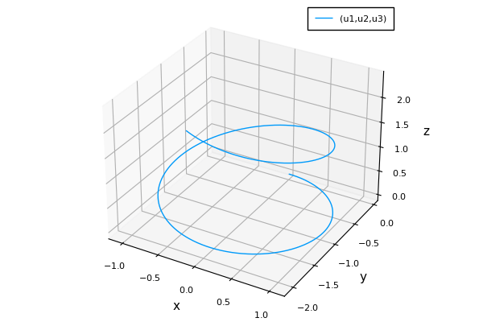
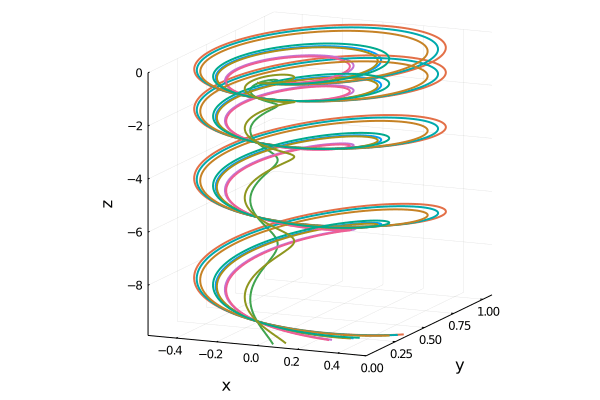
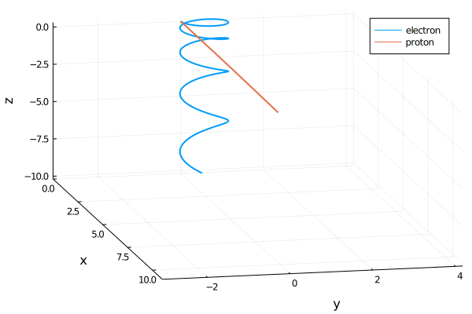
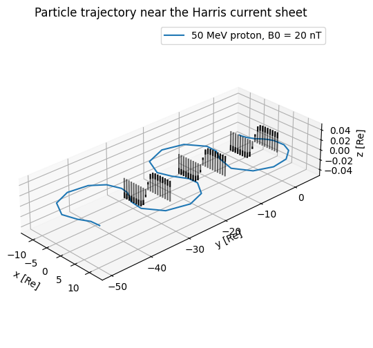
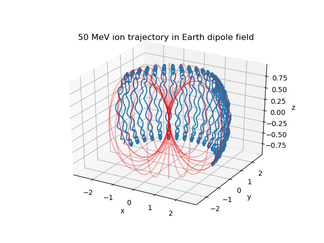
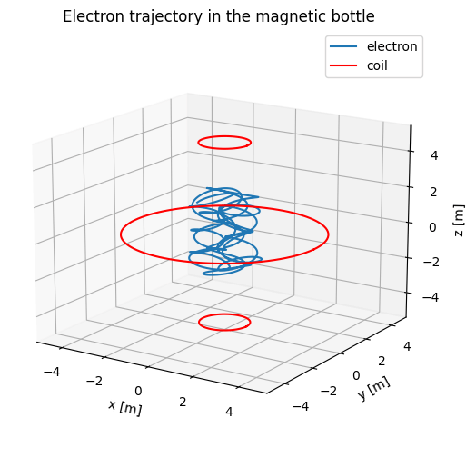
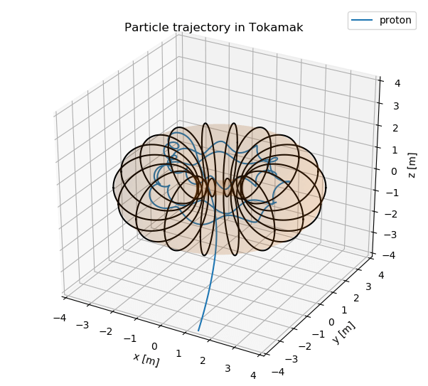
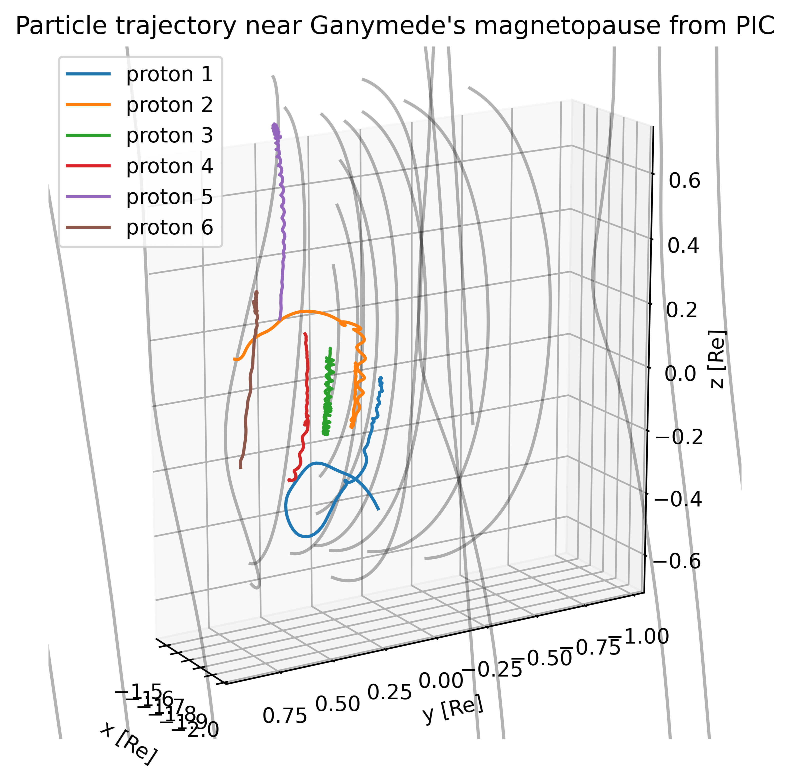

Examples
Multiple demonstrations are provided. For all the tracing methods, we provide both an inplace version (with ! at the end of the function name) and a non-inplace version using StaticArrays. The non-inplace version requires the initial conditions to be static a static vector. Use them at your convenience.
Choice of numerical algorithm
By default DifferentialEquations.jl applies Tsit5 to an ODE problem. However, it is not always guaranteed to work. For example, the demo case of electron tracing in the magnetic bottle with strong magnetic field is tested to work only with fixed timestep algorithms like Euler and the Adams-Bashforth family. Take you some time to figure out which algorithm works for your problem!
Gallery
- Tracing proton in a uniform EM field

The electric field is parallel to the magnetic field in z direction, so the motion consists of a cyclotron gyration and an acceleration along z.
- Tracing electrons in a uniform EM field

- Tracing electron and proton in the same uniform EM field (real physical parameters), source

Due to the fact that $m_p / m_e \doteq 1836$, the proton gyro-radius is 1800 times larger than the electron, if they start with the same velocity as in this case. In more common cases we would compare electrons and protons with the same energy, and their gyro-radii differ by a factor of $\sqrt{m_p/m_e} \sim 40$.
- Tracing in a magnetic dipole field corresponds to a Harris current sheet with strength 20 nT and width 0.4 Re for protons at 50 keV, source

- Tracing in a Earth-like magnetic dipole field for protons at 50 keV, source

This is a combination of grad-B drift, curvature drift, and the bounce motion between mirror points.
- Tracing relativistic electron close to the speed of light in a magnetic bottle, source

, source
As you can see from the trajectory, this proton will escape after a certain time.
- Tracing protons in the simulated EM field near Ganymede from MHD-EPIC
